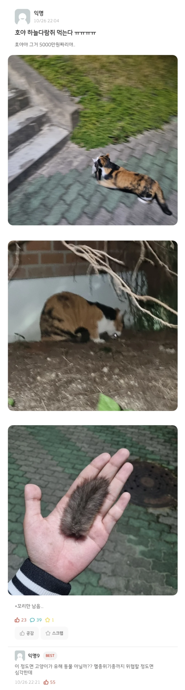
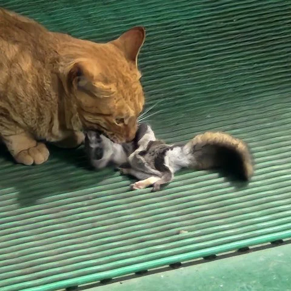
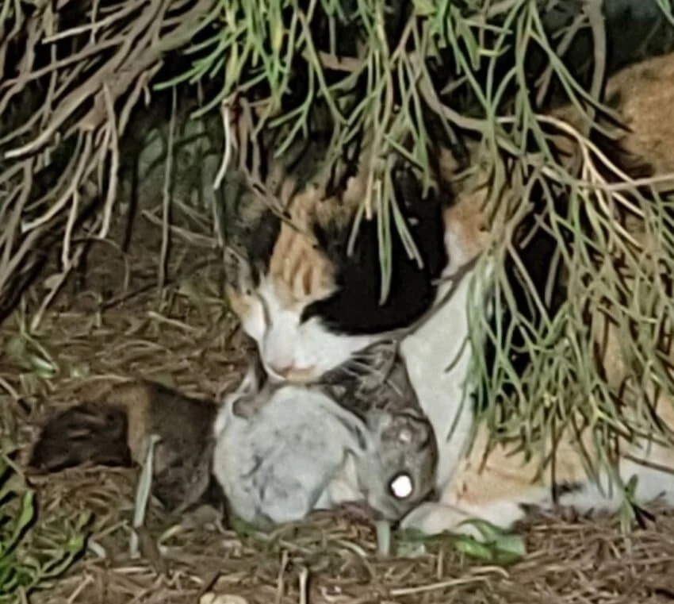
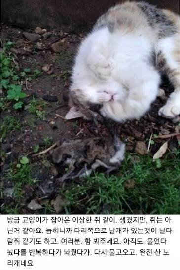
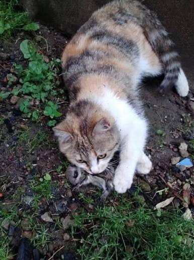
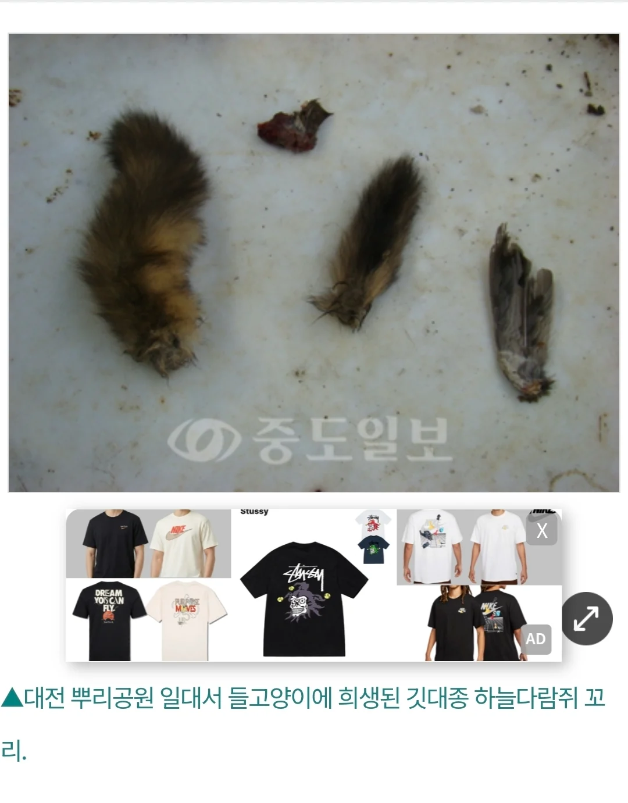

개씹좆냥이는 그냥 한국 야생에 존재해선 안되는 동물
옆나라 일본에선 연구결과 연간 일본 내에서 좆냥이에게 학살당하는 조류가 15억마리, 포유류는 2억마리 이상이라고 추정하고 있다






개씹좆냥이는 그냥 한국 야생에 존재해선 안되는 동물
옆나라 일본에선 연구결과 연간 일본 내에서 좆냥이에게 학살당하는 조류가 15억마리, 포유류는 2억마리 이상이라고 추정하고 있다
댓글
수집 당시 최근 댓글 10개
이불뒤집어쓴시바 · 5 시간 전
아니 첫짤 엄지손가락 뭐임
내할말만하고다님 · 4 시간 전
왜 병신들은 고양이를 좋아할까?
락스계 · 4 시간 전
좆냥이도 비둘기처럼 유해조수 처리 ㅋㅋㅋ
사일러스 · 4 시간 전
엄지손가락 신기하게생겼네
OMOTO · 3 시간 전
어디 서울대 수의과생이 고양이 유해조수라고 하니까 인스타 몰려가서 패던데
독고무영 · 2 시간 전
살처분 ㄱ
비싼연필 · 1 시간 전
개인적으로 하늘다람쥐는 사육 풀어줬으면 좋겠음.. 자연개체 기대수명이 3년남짓인가 그럴텐데 사람이 키우면 10년이 넘어가던데
MZ툴딱 · 1 시간 전
들개는 그렇게 정리해놓고 거양이는 참
노란사탕 · 1 시간 전
고양이에 한해서 새총, 컴파운드보우, 올무 등등 허용해줘야 된다. 생태계 교란종 등록해서 사체1개당 1만원씩 매입해야됨 말도 안되는 tnr같은거에 한마리 할 금액이면 15마리의 고양이 사체가 됨 15배의 효율적인 정책인데 왜 안하는지 모르겠다
주관적인요정 · 1 시간 전
도시에 해충 넘치는거 다 고양이때문임